- 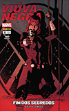
- 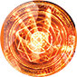
- 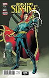

- 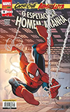
- 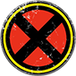
- 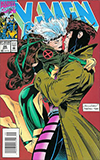

- 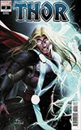
- 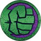


- 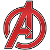
- 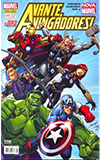
RS 15,00
Viuva Negra
A Viúva Negra (em inglês: Black Widow), alter-ego de Natasha Romanoff, é uma personagem das histórias
em quadrinhos do Universo Marvel publicado pela Marvel Comics.
Nascida na União Soviética, Natalia Alianovna Romanova foi criada por Stan Lee (edição), Don Rico
(roteiro) e Don Heck (desenhos). A personagem apareceu pela primeira vez em Tales of Suspense #52
(abril de 1964) e foi introduzida pela primeira vez como uma espiã russa, antagonista do
super-herói Homem de Ferro. Mais tarde ela fugiu para os Estados Unidos, tornando-se uma
agente da S.H.I.E.L.D. e membra da equipe de super-heróis Vingadores.
RS 15,00
Dr Estranho
O doutor Stephen Vincent Strange, mais conhecido como Doutor Estranho, é um super-herói que aparece nos
quadrinhos publicados pela Marvel Comics. Criado pelo desenhista Steve Ditko e pelo roteirista Stan Lee,
o personagem apareceu pela primeira vez em Strange Tales #110 (julho de 1963). O Doutor Estranho serve
como o Mago Supremo, o principal protetor da Terra contra ameaças mágicas e místicas. Inspirado por
histórias de magia negra e o programa de rádio Chandu, the Magician, Strange foi criado durante a Era
de Prata das histórias em quadrinhos e trouxe temas de misticismo para a Marvel Comics.
Sua origem relata que ele já foi um neurocirurgião brilhante, egoísta e dotado com um coeficiente
intelectual (QI) próximos aos 177 pontos. Depois que um acidente de carro danificou severamente
suas mãos e dificultou sua capacidade de realizar uma cirurgia, Stephen Strange viajou pelo mundo em
busca de uma cura e encontrou o Ancião. Após se tornar um dos antigos alunos do Mago Supremo,
Strange se tornou um praticante tanto das artes místicas como das artes marciais. Além de conhecer
muitos feitiços poderosos, ele possui dois objetos místicos que lhe concedem poderes adicionais: o
Manto da Levitação e o Olho de Agamotto. Ao longo de sua jornada, Stephen é auxiliado por seu amigo
e valet, Wong, e uma grande variedade de objetos místicos. Ele passa a residir em uma mansão chamada
Sanctum Sanctorum, localizada na cidade de Nova Iorque. Mais tarde, Strange ganha o título de Mago Supremo.
RS 15,00
Homem-Aranha
O Homem-Aranha (Spider-Man), o alter ego de Peter Parker, é um super-herói que aparece nas revistas em
quadrinhos publicadas pela Marvel Comics. Criado pelo escritor/editor Stan Lee e pelo escritor/artista Steve Ditko,
o Homem-Aranha apareceu pela primeira vez na Amazing Fantasy #15 (10 de agosto de 1962), durante a Era de Prata
dos Quadrinhos. Lee e Ditko conceberam o personagem como um órfão que foi educado e criado pela sua tia May e o
seu tio Ben em Nova Iorque e que, enquanto adolescente, tem de lidar com as lutas diárias normais da sua idade, em
adição às lutas que tem como combatente do crime. Para combater seus inimigos, os criadores deram-lhe superforça
e superagilidade, a capacidade de aderir na maioria das superfícies, a habilidade de disparar teias de aranha
através de mecanismos montados nos pulsos (inventados por ele próprio e batizados de "lança-teia" — web-shooters)
e a reação precognitiva ao perigo chamada "sentido-aranha" (spider-sense). Peter Parker adquiriu seus poderes após
ter sido picado por uma aranha radioativa.
RS 15,00
X-Man
X-Men é uma equipe de super-heróis de histórias em quadrinhos épicas publicadas nos
Estados Unidos pela Marvel Comics. Criados por Stan Lee e Jack Kirby, estrearam em The X-Men #1,
publicada em setembro de 1963, e era formado inicialmente pelo Professor X, fundador da equipe,
Ciclope, Fera, Homem de Gelo, Anjo e Garota Marvel (Jean Grey).
Os X-Men são mutantes: humanos que, como resultado de um súbito salto evolucionário, nasceram
com habilidades super-humanas latentes, que geralmente se manifestam na puberdade. Consequentemente
no espaço, em suas histórias, vários homens comuns têm um intenso medo e/ou desconfiança dos mutantes
(cientificamente chamados de Homo superior), que são vistos pelos cientistas em geral como o
novo degrau da evolução humana. Logo, muitos os consideram uma ameaça à própria sociedade humana,
fato intensificado por mutantes que usam seus poderes para fins criminosos.
Para combater estes "mutantes malignos" (tais como Magneto e sua Irmandade de Mutantes) e
promover a coexistência pacífica entre as duas raças, o benevolente Professor
Charles Xavier (ou Professor X, o milionário que é, secretamente,
um dos maiores telepatas da Terra), fundou uma academia para treinar jovens mutantes e
doutriná-los em seu sonho de "harmonia inter-racial". Ocultando sua real intenção do
restante do mundo sob a fachada do Instituto Xavier Para Jovens Super-Dotados,
Charles deu, assim, início ao seu sonho.
RS 15,00
Thor
Thor é um personagem fictício que aparece nas histórias em quadrinhos, publicadas pela Marvel Comics,
baseadas no deus Thor da Mitologia Nórdica, ele foi criado por Stan Lee e Jack Kirby. Sua principal arma é o martelo Mjonir.
Estreando na Era de Prata dos quadrinhos, o personagem apareceu pela primeira vez em Journey into Mystery #83 (agosto de 1962).
Ele é um membro fundador da equipe de heróis Vingadores.
Chris Hemsworth interpreta Thor nos filmes do Universo Cinematográfico Marvel: Thor, Os Vingadores,
Thor: O Mundo Sombrio, Vingadores: Era de Ultron, Thor: Ragnarok, Vingadores: Guerra Infinita e Vingadores: Ultimato,
e em breve no seu novo filme: Thor: Love and Thunder.
Thor, também sendo o Vingador mais poderoso dos Cinemas (UCM) e dos quadrinhos, Também está Prestes
a deixar o seu Legado nas Telonas.
RS 15,00
Hulk
O Hulk, por vezes referido como O Incrível Hulk (The Incredible Hulk, no original em inglês), é
um personagem de quadrinhos/banda desenhada do gênero super-herói, propriedade da Marvel Comics,
editora pela qual as histórias do personagem são publicadas desde sua criação, na década de 1960.
Concebido pelo roteirista Stan Lee (1922–2018) e pelo desenhista Jack Kirby (1917–1994),
o Hulk teve sua primeira aparição junto ao público original dos Estados Unidos na revista
The Incredible Hulk n°1, lançada no mercado americano pela Marvel Comics em maio de 1962,
um título solo do personagem, garantindo-lhe o acesso ao que mais tarde seria popularmente conhecido
como Universo Marvel dos quadrinhos/banda desenhada. A partir de então, o Hulk tem aparecido, protagonizando
ou não, diversas histórias da editora, se tornando um dos mais visualmente reconhecíveis da mesma, tendo o
universo entorno do personagem se expandido continuadamente ao longo das últimas décadas.
RS 15,00
Homem de Ferro
O Homem de Ferro (Iron Man) é um personagem dos quadrinhos publicados pela Marvel Comics.
Sua verdadeira identidade é o empresário e bilionário Tony Stark, que usa armaduras
de alta tecnologia no combate ao crime. Foi criado em 1963 pelo escritor Stan Lee,
o roteirista Larry Lieber e os desenhistas Jack Kirby e Don Heck. Stan Lee aceitou o
desafio de fazer um personagem ser odiado e depois amado pelo público, criando um dos
super-heróis mais marcantes de todos os tempos.
A primeira publicação foi em Tales of Suspense #39 (história publicada pela
primeira vez no Brasil em Heróis da TV #100). Desde então, se tornou um dos personagens
mais conhecidos da Marvel, como membro dos Vingadores nas adaptações para desenhos animados
e cinema (no qual foi interpretado por Robert Downey, Jr.).
RS 15,00
Capitão-América
É um super-herói de histórias em quadrinhos americanos publicado pela Marvel Comics.
Criado por Joe Simon e Jack Kirby, o primeiro personagem apareceu em Captain America Comics # 1
(março de 1941) da Timely Comics, antecessora da Marvel Comics. Capitão América foi concebido
como um super-herói patriótico que lutou contra as potências do Eixo na Segunda Guerra Mundial
e foi personagem mais popular da Timely Comics durante o período da guerra.
A popularidade dos super-heróis diminuiu após a guerra e os quadrinhos Capitão América
foram interrompidos em 1950, com uma volta de curta duração em 1953. Em 1964,
o personagem foi reintroduzido como participante do Universo Marvel
RS 15,00
Vingadores Os Vingadores (The Avengers no original em inglês) são um grupo de super-heróis de história em quadrinhos publicados nos Estados Unidos pela editora Marvel Comics. O grupo também aparece em adaptações da Marvel para cinema, desenho animado e jogos eletrônicos. Os heróis mais conhecidos são a formação original de Thor, Homem de Ferro, Homem-Formiga e a Vespa, e Hulk, além de seu primeiro recruta, o Capitão América (introduzido na quarta edição). A equipe, inspirada na Liga da Justiça da DC Comics, tem molde de um clube, inclusive com o mordomo do Homem de Ferro, Jarvis, os servindo. No Universo Marvel, a equipe tradicionalmente é a primeira a ser chamada pelo governo dos EUA quando defrontado por desafios de ordem cósmica, e tem bases em Nova York e uma ilha na costa americana.

- 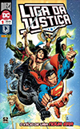
- 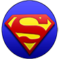
- 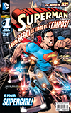

- 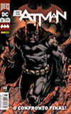
- 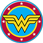
- 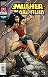
- 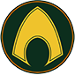
- 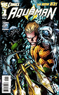

- 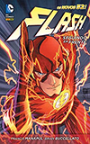
- 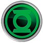
- 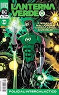
- 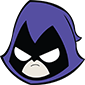
- 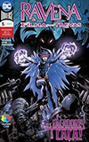

- 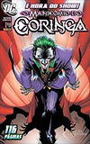
Liga da Justiça
A Liga da Justiça, também conhecida como Liga da Justiça da América
(no original, Justice League of America) é uma fictícia equipe de super-heróis originada nas histórias em
quadrinhos publicadas pela editora americana DC Comics.
A equipe é um conjunto de super-heróis, geralmente formado por sete personagens, também conhecidos como
os "Sete Magníficos". A escalação do time tem sofrido alterações ao longo dos anos, entre seus membros,
destacam-se: Superman, Batman, Aquaman, Mulher Maravilha,[2] Lanterna Verde, Flash, Caçador de Marte e
Ciborgue.
Há alguns anos, a Warner Bros. criou uma versão em desenho animado do grupo, Liga da Justiça e
Liga da Justiça Sem Limites. Foi muito bem recebido pela crítica e por muitos dos fãs, não só da equipe,
mas também leitores de outras editoras.
Superman
Superman ou Super-Homem é um super-herói de histórias em quadrinhos publicadas pela DC Comics.
O personagem, entretanto, desde os anos 1930, já foi adaptado para diversos outros meios, como cinema,
rádio, televisão, literatura e video game. Superman foi criado pela dupla de autores de quadrinhos
Joe Shuster e Jerry Siegel. Sua primeira aparição aconteceu no verão de 1938, na revista Action Comics #1.
O personagem nasceu no planeta fictício Krypton e tinha o nome de Kal-El. Foi enviado à Terra por seu
pai cientista, Jor-El, momentos antes de Krypton explodir. O foguete aterrissou na cidade de Smallville
(por alguns anos, foi traduzida no Brasil como Pequenópolis), onde o jovem Kal-El foi descoberto pelo
casal de fazendeiros Jonathan Kent e Martha Kent. Conforme cresceu, Kal-El descobriu que tinha capacidades
sobre-humanas. Quando não está com o tradicional uniforme azul e vermelho, vive com Lois Lane e
Jimmy Olsen como Clark Kent, um repórter/jornalista no Planeta Diário.
É um dos mais importantes personagens da cultura pop ocidental, sendo o primeiro herói dos quadrinhos a
ter uma revista intitulada com seu nome: Superman #1. Além disso, Superman foi licenciado e adaptado para
diversas mídias, desde rádio até televisão e cinema.
Batman
O Batman (inicialmente chamado o Bat-Man) também conhecido pelas alcunhas Homem-Morcego,
Cavaleiro das Trevas, Cruzado Encapuzado, Maior Detetive do Mundo, é um personagem fictício e
super-herói encapuçado da editora norte-americana DC Comics, criado pelo desenhista Bob Kane e pelo
escritor Bill Finger, aparecendo pela primeira vez na história em quadrinhos Detective Comics#27
(maio de 1939) com o nome "o Bat-Man".
A identidade secreta do Batman é Bruce Wayne, um bilionário americano, playboy, magnata de negócios,
filantropo e dono da corporação Wayne Enterprises. Depois de testemunhar o assassinato dos seus pais
enquanto criança, Wayne jurou vingança contra os criminosos — um juramento moderado por um ideal justiça.
Wayne, então, treina física e intelectualmente e cria uma persona inspirada no morcego para combater o crime.
Batman opera na cidade fictícia de Gotham City, sendo ajudado por seu mordomo Alfred Pennyworth, o
comissário da polícia Jim Gordon e aliados vigilantes como Robin. Ao contrário da maior parte dos super-heróis,
Batman não tem superpoderes; assim, na sua guerra contra o crime, utiliza seu intelecto de gênio,
sua perícia em artes marciais e sua destreza física — bem como sua riqueza, que lhe garante um enorme arsenal
de armas e equipamentos de última geração. Uma grande variedade de vilões compõem a galeria de inimigos
do Batman, incluindo o Coringa, seu nêmesis.
Batman tornou-se popular assim que foi apresentado, acabando por ganhar a sua própria revista de banda
desenhada em 1940, Batman. Enquanto as décadas progrediram, foram surgindo divergências sobre a
interpretação do personagem. No final dos anos de 1960 a série de televisão Batman usava uma estética
camp, que continuou a ser associada ao personagem durante muitos anos, mesmo depois da série ter acabado.
Vários criadores trabalharam no sentido de trazer de novo o personagem de volta às suas raízes
sombrias, culminando com The Dark Knight Returns (1986) de Frank Miller, seguido por Batman:
The Killing Joke (1988) de Alan Moore e Arkham Asylum: A Serious House on Serious Earth (1989) de
Grant Morrison. O sucesso dos filmes Batman da Warner Bros. ajudaram a manter o interesse do público
na personagem.
Mulher Maravilha
Mulher-Maravilha (em inglês, Wonder Woman) é uma personagem fictícia de histórias em quadrinhos publicadas pela editora
estadunidense DC Comics, originalmente é uma super-heroína guerreira de origem greco-romana, alter ego da Princesa Diana
de Themyscira, ilha oculta, também conhecida como Ilha Paraíso, local da civilização de amazonas
(como as figuras da lenda grega-romana). Como emissária de Themyscira para o Mundo do Homem, assume o
pseudônimo de Diana Prince, identidade secreta que ela adotou para se aproximar da humanidade no Universo DC.
Entre os super-heróis, ela era a mulher independente, não menina. Membro honorário da Sociedade de Justiça da América,
primeiro grupo de super-heróis a aparecer historicamente nas Histórias em Quadrinhos. Na Era Prata, fundadora da
Liga da Justiça permanecendo até hoje.
Sua primeira aventura foi na revista All Star Comics #8 de dezembro de 1941, nos Estados Unidos,
escrita pelo psicologo-escritor William Moulton Marston, com pseudônimo Charles Moulton,
co-criada por sua esposa, a advogada Elizabeth Marston e desenhada por Harry G. Peter.
A história tem continuação direta em Sensation Comics #1 de janeiro de 1942. Com o sucesso alcançado,
ela ganhou sua própria revista em quadrinhos em maio de 1942, Wonder Woman #1,
que foi transferida exclusivamente para a DC Comics em 1944.
Aquaman
Aquaman é um super-herói das histórias em quadrinhos americanas da DC Comics. Criado por Paul Norris e Mort Weisinger,
o personagem estreou na revista More Fun Comics #73 (novembro de 1941, apesar de constar na capa "novembro",
More Fun Comics #73 chegou às bancas dos EUA em 25 de setembro de 1941.). Inicialmente um herói secundário em títulos
da antologia da DC, Aquaman depois estrelou em vários volumes como herói principal. Durante o final dos anos 1950 e 1960,
período do renascimento dos super-heróis, conhecido como Era de Prata dos Quadrinhos, ele era um membro fundador
da Liga da Justiça da América. Na década de 1990, a Era Moderna dos Quadrinhos, o personagem Aquaman tornou-se mais
sério do que na maioria das interpretações anteriores, com enredos que descrevem o peso de seu papel como o
rei da Atlântida.
Flash
"Flash" é um nome compartilhado por diversos super-heróis da DC Comics. Criado pelo escritor Gardner
Fox e pelo artista Harry Lampert, o Flash original estreou em Flash Comics #1 (1940).
Também chamado de Velocista Escarlate, o Flash possui velocidade e reflexos sobre-humanos e viola
certas leis da física, podendo ultrapassar a velocidade da luz. Até então, quatro personagens
ganharam a supervelocidade de modos diferentes e assumiram a identidade de Flash: Jay Garrick (1940-1956),
Barry Allen (1956-1986, 2008-presente), Wally West (1986-2006, 2007-presente) e Bart Allen (2006-2007).
Barry Allen é considerado o primeiro super-herói da Era de Prata dos Quadrinhos e permaneceu como um
dos mais populares desde então. Cada versão do Flash foi um membro-chave ou da Sociedade da Justiça
da América ou da Liga da Justiça, os principais grupos da DC.
Lanterna-Verde
"Lanterna Verde (em inglês: Green Lantern) é um nome compartilhado por diversos super-heróis da DC Comics.
Criado por Martin Nodell e Bill Finger, o Lanterna Verde original estreou em All-American Comics nº16 (1940).
Reformulado como um novo super-herói com o mesmo nome nos anos 60, o personagem original ficou conhecido através
do nome que lhe foi chamando por seus pais de Alan Scott e por um tempo adotou a identidade de Sentinela (Brasil).
O Lanterna Verde atual foi lançado nos quadrinhos da década de 60, e também é conhecido
como "O Lanterna Verde da Era de Prata". A inspiração foi a série literária Lensman de E. E. Smith.
A identidade do Lanterna Verde da Era de Prata, era a de , membro fundador da Liga da Justiça da América.
Apesar do excelente trabalho do desenhista Gil Kane nesse período, era um personagem de super-herói relativamente
genérico até que em 1970 a DC resolveu emparelhá-lo com o Arqueiro Verde (Oliver "Ollie" Queen), em uma série
de quadrinhos absolutamente inovadora e de cunho social. Essa época ajudou a consolidar o novo Lanterna Verde
como um herói popular, apesar das séries subsequentes abordarem temas mais cósmicos.
Ravena
Raven, (cujo significado literal é "corvo") é uma anti-heroína fictícia que aparece nas histórias em quadrinhos
americanas publicadas pela DC Comics. A personagem apareceu pela primeira vez em DC Comics Presents #26 (outubro 1980), e
foi criada pelo escritor Marv Wolfman e desenhada pelo ilustrador George Pérez. Ravena é uma empata, que pode se teletransportar
e controlar a sua alma, podendo lutar fisicamente, bem como atuar sendo seus olhos e ouvidos mesmo estando longe de seu corpo.
A História Cronológica de Raven é dividida tipicamente em três partes. Em sua primeira vida, Raven tinha apenas 18 anos e vivia
no Templo de Azarath, tendo criado os "Novos Titãs". Em sua segunda vida ela se transformou na "Ravena Branca", e durou menos de
dois anos. E em sua terceira vida, que é sua forma atual, ao contrário da transição entre a sua primeira vida e a segunda,
com sua terceira vida ela veio em um corpo novo, mais jovem.
Coringa
O Joker (no Brasil, também conhecido como Coringa) é um supervilão fictício que aparece nos livros de histórias em
quadrinhos norte-americanos publicados pela editora estadunidense DC Comics. Foi criado por Jerry Robinson, Bill Finger e
Bob Kane e apareceu pela primeira vez em Batman #1 (Abril de 1940). Parcialmente inspirado em Gwynplaine, personagem
interpretado por Conrad Veidt, no filme O Homem Que Ri (1928), os créditos para a criação do Coringa são disputados;
Kane e Robinson reclamam responsabilidade pelo seu desenho, apesar de reconhecerem a contribuição de Finger na escrita.
De acordo com o plano inicial, o Coringa deveria ter morrido na sua primeira aparição, mas foi poupado por uma intervenção
editorial, permitindo assim que o personagem fosse progredindo como o célebre arqui-inimigo do super-herói Batman.
Também é conhecido por outros nomes como "Príncipe Palhaço do Crime" ou "Bobo da Corte do Genocídio".